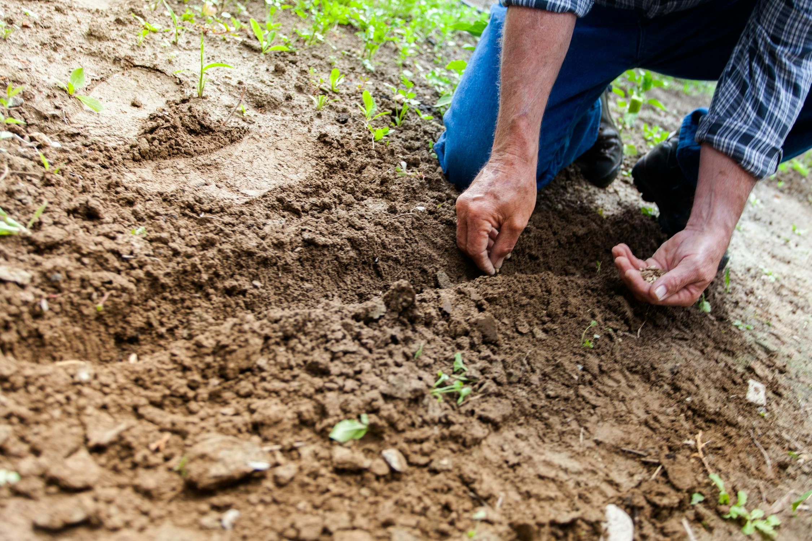
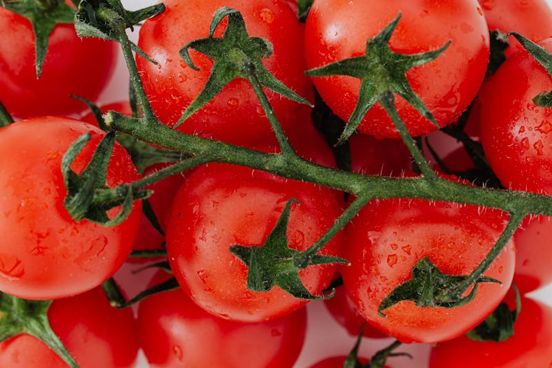

Welcome to Agro products, we give the best for good price


- Mouth watering offers.
- Good quality.
- Affordable.


What you get from us
- A wide range of day to day agricultural products
- Reasonable price
- All of our products are 100% organic
- Direct contact with the farmers
- You prevent waste by buying from Us
Reach out to us